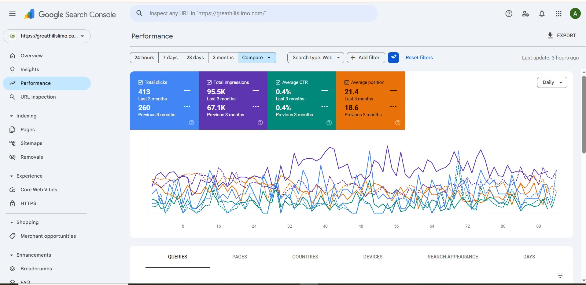
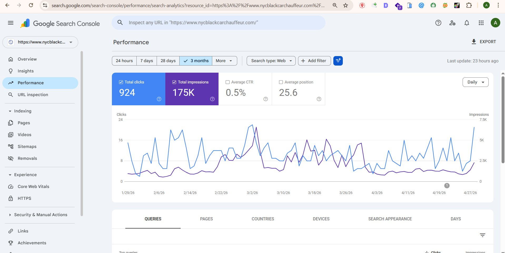
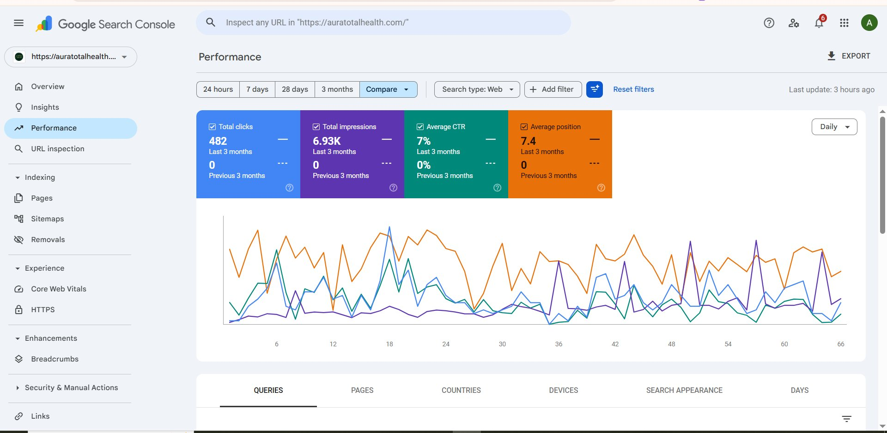
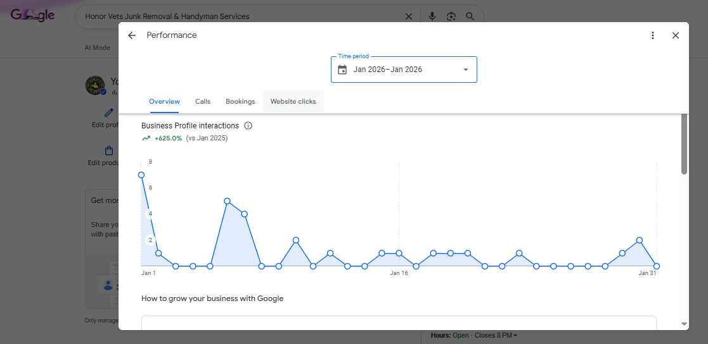

On-Page SEO
Optimize page structure, titles, headings, metadata and content relevance.
I’m Hafsa Fatima, an SEO Specialist with 3 years of experience working across local and organic search. I help businesses build stronger search visibility through practical, data-informed SEO.
I work on improving how businesses appear in search, from technical foundations and on-page improvements to local visibility and authority building.
My approach combines keyword research, competitor analysis, search performance monitoring and consistent optimization. I use tools such as Google Search Console, GA4, Ahrefs and Semrush to guide decisions and track progress.
My portfolio highlights selected projects and reporting examples from work I have personally handled.
Good SEO is not just about rankings. It’s about helping the right people discover the right business.
MY APPROACHA complete range of SEO services to strengthen your website and local search presence.
Optimize page structure, titles, headings, metadata and content relevance.
Build website authority through relevant off-page activities and outreach.
Review crawlability, indexation, site structure and technical health.
Improve local search visibility and help nearby customers find your business.
Optimize business profiles, categories, services, updates and local relevance.
Find relevant search terms based on intent, competition and opportunity.
Review competitor visibility, keywords and opportunities to improve.
Support authority growth with relevant, quality-focused link acquisition.
Plan relevant guest-post placements to support reach and authority.
Identify on-page, technical and content issues with actionable priorities.
Improve content usefulness, structure and alignment with search intent.
Selected Google Search Console and Google Business Profile reporting examples from projects I worked on.

GOOGLE SEARCH CONSOLESearch performance snapshot showing organic clicks and impressions over the selected three-month period.

GOOGLE SEARCH CONSOLEThree-month performance snapshot, with the report showing 482 clicks and 6.93K impressions.

GOOGLE SEARCH CONSOLEThree-month comparison: clicks increased from 260 to 413 and impressions from 67.1K to 95.5K.

GOOGLE BUSINESS PROFILELocal SEO reporting covered profile optimization, local keywords, map citations, business listings and profile posts.
The report lists six keywords at position #1 and three additional keywords at position #2; the report also records nine profile interactions as of Dec 24.
Performance figures are transcribed from the supplied Google reporting screenshots and Honor Vets monthly report. Results reflect the periods and reporting views shown; they are not a guarantee of future performance.
Understand the business, audience, website and goals.
Analyze keywords, competitors and search opportunities.
Implement prioritized on-page, technical and local SEO work.
Monitor performance and use data to guide ongoing improvements.
Tell me about your business and SEO goals. Let’s discuss how I can help.
hafsafatimaseo@gmail.com ↗